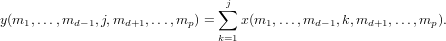

CUMSUM Cumulative Summation Function
Section: Elementary Functions
Usage
Computes the cumulative sum of an n-dimensional array along a given
dimension. The general syntax for its use is
y = cumsum(x,d)
where x is a multidimensional array of numerical type, and d
is the dimension along which to perform the cumulative sum. The
output y is the same size of x. Integer types are promoted
to int32. If the dimension d is not specified, then the
cumulative sum is applied along the first non-singular dimension.
Function Internals
The output is computed via

Example
The default action is to perform the cumulative sum along the
first non-singular dimension.
@>
To compute the cumulative sum along the columns:
@>
The cumulative sum also works along arbitrary dimensions
@>